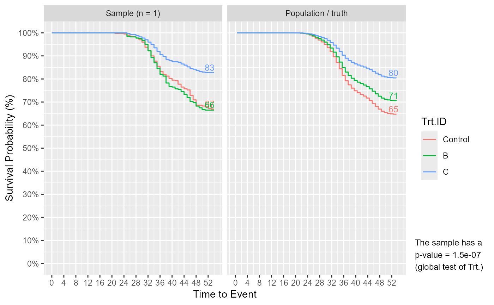
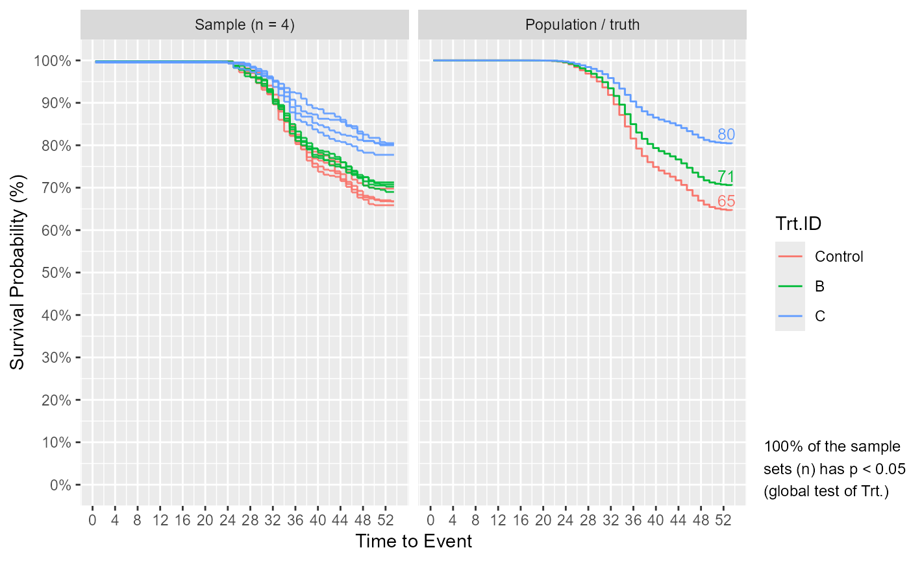

Simulates survival data based on a set of user-specified experimental parameters and a reference hazard curve (e.g. hazard curve from the control group). Able to simulate data with inter-cluster (e.g. tank) variation based on the framework of the mixed cox proportional hazards model (coxme::coxme). Able to simulate right censored data (e.g. sampled fish) using sampling_specs argument. Optionally produces a plot illustrating the characteristics of the simulated data and that of the population / truth from which the data (sample) is simulated.
Surv_Simul(
haz_db,
fish_num_per_tank = 100,
tank_num_per_trt = 4,
treatments_hr = c(1, 1, 1, 1),
logHR_sd_intertank = 0,
sampling_specs = NULL,
n_sim = 1,
plot_out = TRUE,
pop_out = TRUE,
plot_name = "Surv_Simul-Plot-Output",
theme = "ggplot2"
)A dataframe representing the reference hazard curve; can be generated from bshazard() or Surv_Plots().
The number of fish to simulate per tank. Defaults to 100.
The number of tanks to simulate per treatment group. Defaults to 4.
A vector representing the hazard ratios of the treatment groups starting with the reference/control (HR = 1). Length of the vector represents the number of treatment groups. Defaults to c(1, 1, 1, 1).
The standard deviation of inter-tank variation in the log(HR) scale according to the coxme framework. Defaults to 0 (no inter-tank variation) which has been and quite oftenly, the estimate for Trojan fish data. For reference 0.1 reflects a low inter-tank variation situation, while 0.35 is fairly high but can and has occurred in some experiments.
A dataframe representing the number / amount of right censored data (e.g. sampled fish) per tank at different times represented by two columns "Amount" and "TTE", respectively. See Examples for example of use. Defaults to NULL (no sampling).
Number of survival dataset to simulate. Defaults to 1.
Whether to output the information plot (further details in return). Defaults to TRUE.
Whether to output a dataframe containing the survival probability values for the population. Defaults to TRUE.
Character string specifying the name of the saved plot. Defaults to "Surv_Simul-Plot-Output".
Character string specifying the graphics theme for the plots. Theme "ggplot2" and "prism" currently available. Defaults to "ggplot2".
At minimum, returns a simulated survival dataframe consisting of 5 columns: TTE (Time to Event), Status (0 / 1), Trt.ID, Tank.ID, and n_sim which represents the simulation number for the data subsets.
If plot_out = TRUE, outputs a list that additionally contains a Kaplan-Meier survival plot. The plot illustrates the survival curve with end survival rates for the simulated dataset as well as the population. If the number of simulated dataset is greater than 1, multiple curves are drawn representing each and a statement is provided regarding the power to detect the effect of Treatment – specifically, the percent positive (p < 0.05) from a global log-rank test using survival::survdiff().
If pop_out = TRUE, outputs a list that additionally contains a dataframe representing the survival probability values for the population / truth from which the sample is supposedly taken.
Simulations are based on uniform-probability draws (U ~ (0, 1)) from a set of events which can be expressed through time using the cumulative density function of failures (F(t), i.e. cumulative mort. curve). F(t) can be transformed to the cumulative hazard function H(t), hence the relationship between H(t) and uniform draws (U is also known (derivation and equation in Bender et al. (2003). Because H(t) is related (as the integral) to the hazard function h(t), and since h(t) is related to effects (e.g. treatment or tank) based on the cox proportional hazards model, such effects can now be incorporated into the simulation process as they can be interacted with U. The simulation process is as follows:
Surv_Simul() takes a random sample from U (e.g. 0.7).
U is then transformed into H as their relationship is known (see Bender et al. 2003) as:
H = -log(U) ⋅ exp(-log(β)); β representing treatment or tank effects.
The function H(t) inverse (known from the supplied reference hazard curve) is applied to H to obtain t (time to event) which represents the survival data.
Data with t beyond the last follow-up period represent survivors (Status set to 0), and below it, represents mortalities (Status set to 1).
To verify the correct "randomness" is produced in the simulated survival data, given that adding "randomness" is the whole point of simulations (to me), 5 different validation checks have been performed (documented in a pdf to be uploaded to github). Those checks showed that the HR estimated by fitting two curves sampled from the same population, converges to a mean of 1 (as should be) over many simulations, and across simulations the HR varies as expected (SD of simulated HRs = SE of HR as supposed by the cox model). Those checks also showed that the p-value obtained by applying log-rank test to null (no-effect) simulated datasets, has a distribution that is uniform (as should be), with a false positive rate of 0.05 given the alpha used was 0.05 (as should be). Additionally, power calculated from the simulations equal to the power calculated from an online calculator. Last, the checks showed that the variations in a simulated survival curve is similar to that observed in curves simulated using a different, more limited, method (bootstraping / re-sampling with replacement).
Link for executed examples which includes the figure outputs.
#Starting from an example mortality database, we first generate the complete survivor data using Surv_Gen()
data(mort_db_ex)
surv_dat = Surv_Gen(mort_db = mort_db_ex,
starting_fish_count = 100,
last_tte = 54)
#Filter for the control group ("A") to use as a reference hazard curve for simulations
surv_dat_A = surv_dat[surv_dat$Trt.ID == "A", ]
#Estimate the hazard curve of the control group and get the associated hazard dataframe using either bshazard::bshazard() or safuncs::Surv_Plots()$Hazard_DB
ref_haz_route_bshazard = bshazard::bshazard(data = surv_dat_A, survival::Surv(TTE, Status) ~ Tank.ID, verbose = FALSE)
#> NOTE: entry.status has been set to 0 for all.
ref_haz_route_bshazard = data.frame(summary(ref_haz_route_bshazard)$HazardEstimates)
ref_haz_route_safuncs = safuncs::Surv_Plots(surv_db = surv_dat_A, data_out = TRUE)$Hazard_DB
#> NOTE: entry.status has been set to 0 for all.
#Simulate!
Surv_Simul(haz_db = ref_haz_route_safuncs,
treatments_hr = c(1, 0.8, 0.5),
sampling_specs = data.frame(Amount = 10,
TTE = 45))$surv_plots #sampling of 10 fish at 45 DPC, but otherwise default experimental conditions.

#Simulate multiple times to better see if samples are reliable to answer the question: are my future samples likely to be good approximates of the truth / population
Surv_Simul(haz_db = ref_haz_route_safuncs,
treatments_hr = c(1, 0.8, 0.5),
sampling_specs = data.frame(Amount = 10,
TTE = 45),
n_sim = 4)$surv_plots
